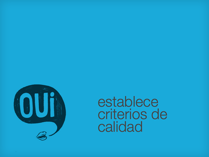

establece criterios de calidad
Todo proceso debería de tener un control de calidad, cualquier método que nos permita medir si la cosa va bien.
El criterio más inmediato sería pasar nuestro código por los validadores de la w3c recordando que un código que valide no significa que funcione correctamente. Si tienes un buen puñado de htmls hay maneras de automatizar el validado o de checkear determinados aspectos accesibles.
La revisión entre navegadores, incluso en proyectos pequeños, es tediosa pero necesaria. Lo ideal es que nuestro trabajo funcione a la perfección en todo el espectro, pero es interesante definir cuales son los imprescindibles.